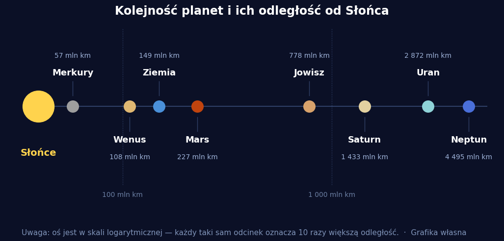
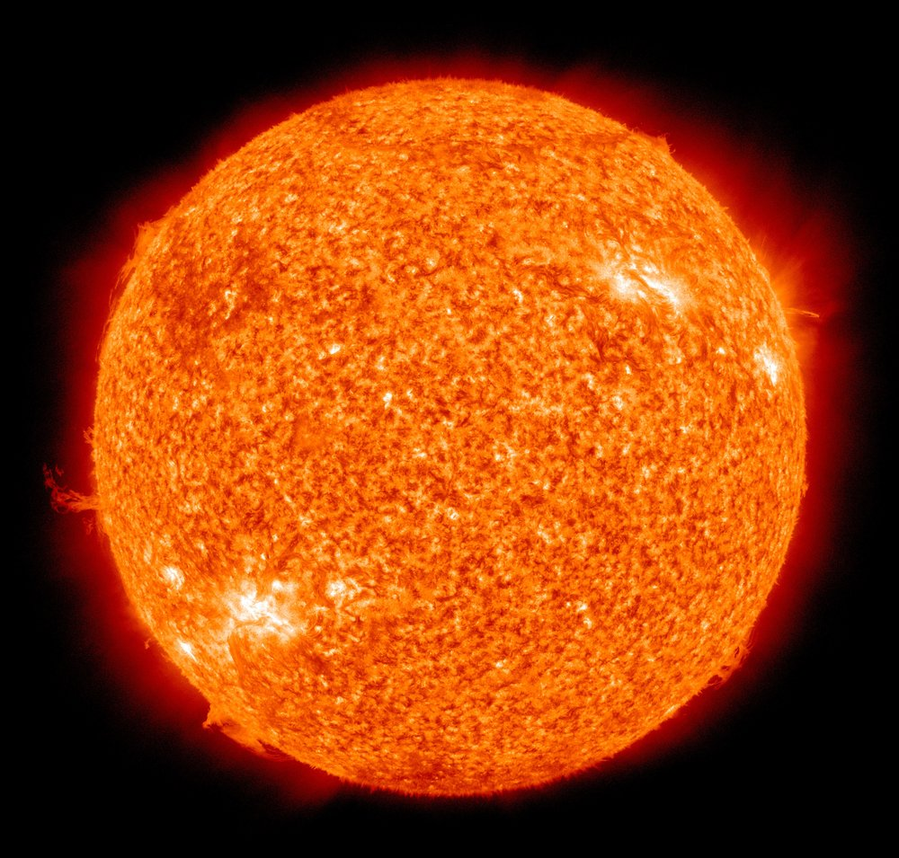

To jest strona przykładowa, przygotowana na zajęcia z informatyki. Pokazuje, jak może wyglądać gotowy projekt: są tu części tematyczne, podstrona, menu, grafiki, tabela z obliczeniami, wykres i sekcja ze źródłami. Cała strona jest napisana w zwykłym HTML-u i CSS-ie - bez żadnych gotowych szablonów.
Chcesz zobaczyć, jak to jest zrobione od środka? Kliknij w menu Jak to zrobiono? albo zajrzyj do kodu źródłowego.
Układ Słoneczny to Słońce i wszystko, co krąży wokół niego: osiem planet, ich księżyce, planety karłowate, planetoidy i komety. Wszystko to utrzymuje przy Słońcu grawitacja - im bliżej Słońca znajduje się planeta, tym szybciej musi się poruszać, żeby nie spaść na gwiazdę.
Planety zawsze krążą w tej samej kolejności. Najbliżej Słońca są cztery małe planety skaliste, a dalej cztery olbrzymy. Między Marsem a Jowiszem znajduje się pas planetoid - obszar pełen skalnych okruchów.

Grafika 1. Kolejność planet i ich odległość od Słońca. Grafika własna - narysowana specjalnie na tę stronę. Uwaga: odległości są pokazane w skali logarytmicznej, czyli taki sam odcinek oznacza 10 razy większą odległość. Gdyby narysować je zwyczajnie, cztery pierwsze planety zlałyby się w jedną kropkę.
Słońce to zwykła gwiazda - taka sama jak te, które widzimy nocą, tylko znacznie bliżej nas. W jego wnętrzu wodór zamienia się w hel, a przy okazji powstaje ogromna ilość światła i ciepła. To dzięki niemu na Ziemi jest życie.

Grafika 2. Słońce sfotografowane przez sondę NASA Solar Dynamics Observatory (19.08.2010). Autor: NASA/SDO (AIA), domena publiczna - zobacz sekcję „Źródła”.
Dalszy ciąg jest na podstronie: Planety. Znajdziesz tam opis planet skalistych i olbrzymów, tabelę z danymi, obliczenia i wykres.
Skąd wziąłem informacje i obrazki (stan na 16 listopada 2026):
Dlaczego przy źródle podaję datę? Bo niektóre dane się zmieniają - na przykład liczba znanych księżyców rośnie z roku na rok. Data mówi, kiedy sprawdzałem informację.
Strona przykładowa na zajęcia z informatyki · Zobacz kod źródłowy tej strony